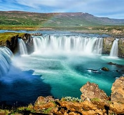
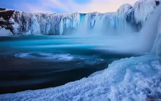
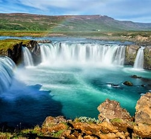
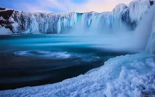

Reykjavík, Iceland
Reykjavík is known for its colorful buildings, friendly atmosphere, and incredible natural scenery surrounding the city. From waterfalls and glaciers to hot springs and volcanic landscapes, it’s a destination full of adventure.
 



Destination Information
Reykjavík mixes small-city charm with access to some of the most dramatic natural sights in the world. The city itself is full of cafés, shops, and unique architecture, while the nearby countryside offers breathtaking views that feel almost unreal.
Travel Tips & Logistics
Iceland can be expensive, so planning ahead helps. Renting a car is a great way to explore, but the city’s buses are easy to use too. The weather changes fast, so warm clothing, layers, and waterproof gear are essential. Many visitors also book popular tours like glacier hikes or lagoon visits in advance.
Fun Things to Do
Relax in the Blue Lagoon, go whale watching, explore the Golden Circle, or walk around the downtown area where you’ll find great food and local art. If you visit in winter, you may even see the Northern Lights.